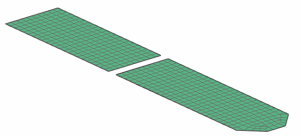

Make the assembly part the work part
 Simulation Navigator
Simulation Navigator
-
 Solar Panels_assyfem1.afm
Solar Panels_assyfem1.afm -
 Make Work Part
Make Work Part
Both component FEMs are visible and selectable.
Because the assembly FEM is the work part, the only meshes that you can create are the 1D connectors and manual nodes/elements.